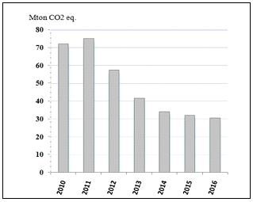

Syrian Arab Republic
November, 2018
This document represents the Syrian Nationally Determined Contributions (NDCs) on a voluntary basis, as a national need and contribution to support international efforts to achieve Paris agreement goals, in order to reduce greenhouse gas (GHG) emissions and strengthen the global response to the threat of climate change. It comes based on the commitment of the Syrian Arab Republic to environmental conventions, protocols and agreements, including the United Nations Framework Convention on Climate Change (UNFCCC).
The Syrian Arab Republic, as a developing and non-industrialized country that located in arid to semi-arid region, is affected by the impacts of climate changes in its multiple dimensions, it also faces exceptional circumstances as a result of the terrorist war launched since 2011, and the operations of the illegal "international coalition", in which resulted a massive destruction to infrastructure and environment, and allocating a large part of the national efforts and available resources to address the repercussions of these circumstances.
The unilateral coercive economic measures imposed by some states and regional entities on the Syrian Arab Republic since 2011, have caused enormous losses of economic structures and negatively affected the efforts of the Syrian State institutions and civil society for protecting the environment and supporting national plans of adaptation and mitigation. The continuation of these measures is the biggest challenge that Syrian’s effort faces in accordance with its international commitments related to the climate change and environment, and to strengthen the society’s resilience since these measures, accompanied by a deliberated reduction of international aid and financing, targeted the key sectors of the Syrian economy, particularly technological components, energy and financing channels. Not to mention the catastrophic impacts of the continued occupation of the Occupied Syrian Golan by Israel, the occupying power, in which depletes its resources and pollutes its natural environment.
The terrorist war against the Syrian Arab Republic has hindered the implementation of the national environmental strategy. Therefore, the transitional period after the war requires a special strategy aiming to a new stage of recovery. The main phase of this strategy is to insure a rapid respond to restore all affected production and service structures and environmental systems, in addition to providing the requirements of linking between local development projects and their contributions to the adaptation and mitigation of climate change, especially through the national ownership of reconstruction projects and strengthening the legal environment aiming at protecting and investing natural and environmental resources, as well as achieving the national response to urgent and longterm needs, in order to reach the inclusive economic growth period with its environmental dimension.
This report covers the visions and ambitions of the Syrian Arab Republic for addressing the impacts of climate change, and the efforts of mitigation and adaptation for the period 2020-2030, as well as acknowledging the importance of strengthening the pillars of sustainability as a "developmental status", including the environmental dimension, taking into account the special national circumstances and effects of the terrorist war which resulted in major losses in previous development achievements.
Thus, the Syrian Arab Republic considers its contributions in line with the principles of the UNFCCC, and reaffirms, according to the Paris Agreement, that Developed Country parties shall provide support to assist developing countries with respect to both mitigation and adaptation in order to implementing their contributions and increase resilience, thus pursuing efforts, assess the impacts of GHG emissions, plan, and implement the relevant activities within specific periods of time. These efforts shall be developed in accordance with the level of progress achieved in the targeted sectors.
The terrorist war on the Syrian Arab Republic, and the continuation of the unilateral coercive economic measures imposed on the Syrian Arab Republic, have caused a massive destruction of a number of production structures, a significant decline in economic, social and environmental factors, prioritizing issues at the expense of others, lack of access to technology, including production technologies, as well as freezing of international funding and support in many fields, including funds for the preparation and implementation of the national plans aimed to protect the environment.
However, these circumstances have enhanced the Syrian state's decision regarding the necessity of adopting the approach of sustainability as a national priority, especially by restoring the lost previous developmental gains, overcoming the impacts of the war and addressing the challenges that Syrian society faced with them. These national efforts were implemented through continuing of rehabilitating and sustaining physical, service and environmental infrastructure; increasing the use of alternative energies; reducing waste generation and increasing recycling; upgrading the efficiency of housing by applying the green architecture; rationalizing energy consumption; and promoting sustainable transportation; in which all contribute to reduce GHG emissions and support mitigating the impacts of climate change.
Based on the principle of common but differentiated responsibilities( CBDR) as stipulated in UNFCCC and its related agreements and protocols, the Syrian Arab Republic stresses the need of developed countries to meet their responsibilities related to the Climate Change ,especially through providing an adequate and predictable finance, capacity building and transfer of technology ,to support the national plans of developing countries related to adaptation of the impacts of climate change.
Following of the Syrian Arab Republic’s ratification of Paris Agreement on 13/11/2017, the national committee established in the Ministry of Local Administration and Environment, which includes representatives of the relevant ministries and national bodies, intensified its work in preparing the first NDC.
The Syrian NDCs prepares on a voluntary basis for the period 2020-2030 and in line with national priorities. It has been developed within institutional frameworks through sectorial consultations and workshops in the Syrian governorates with participation of national stakeholders and representatives of local administration.
Although the Syrian Arab Republic is not one of the major contributor countries to climate change and greenhouse gas emissions, it is one of the countries highly affected by the global warming and climate change, especially the unprecedented climatic phenomenon, such as precipitation change and rainstorms, drying up of some rivers or dropping water levels of natural and artificial lakes, frequent drought and its increasing risks, unprecedented levels of temperatures, heatwaves, forest fires, sand and dust storms, increasing duration and frequency of sand and dust storms, and desertification. The impact of global climate changes with their local impacts on land-use patterns and the accelerating pace of their degradation has put pressure on:
Natural resources for agriculture and livestock exploitation, and the implications on sustainable production and strengthening communities' resilience.
Renewable energy resources such as hydropower, due to drop in water levels, and wind power, as a result of climate variability.
Water resources, which are already limited, especially the suffering from a growing water deficit due to the increasing demand of water for irrigation, drinking and industrial purposes.
Natural ecosystems and their balance, as well as the overall impact on public health and other economic, production, service and social sectors.
In fact, the Syrian Arab Republic faces obstacles to obtain advanced technologies that meet all environmental standards in which play a key role in sustaining and strengthening mitigation and adaptation measures, and building resilience. It faces also the lack of specialized skills in such areas, particularly the expertise in environmental economics and environmental degradation costs. In addition, it faces obstacles in the context of implementation the vital projects, including CDM projects, as well as localization of many technologies and software in order to monitor the current situation and to simulate and extrapolate the future, while these tools are important for developing all economic, social and environmental indicators and measuring the level of meeting the needs of management and planning of sustainable development. Not to mention, that these obstacles are mainly due to the unilateral coercive economic measures imposed on Syrian Arab Republic for decades ago, in which increased since 2011, and their serious implications on building an economy, which be able to adapt climate change.
However, these obstacles did not prevent the Syrian state from paying the appropriate attention to the environmental dimension, through:
The new constitution (2012) in which stipulates that: "Protection of the environment shall be the responsibility of the state and society and it shall be the duty of every citizen".
The Local Planning regulation (107/2011) gives the local units the tasks of achieving a balanced and sustainable development.
The Regional Planning Law No. 26 (2010) adopts regional planning approach and contributes to support development across regions according to priorities and requirement.
The Environment Law NO 12 (2012) established the rules of protection and preservation of environmental elements and its main components.
The Syrian Arab Republic presented its first national communication on climate change in 2010, while the national emission inventory study showed that the total GHG emissions reached 79.07 TGCO2 eq in 2005. The share of emissions from the energy sector was 73%, followed by agriculture sector 18%, industrial sector 4%, and waste sector 5%. The preparing of the second national communication began in 2012 and could not be fulfilled as a result of the freezing of funding by international donors. This fact highlights the urgent need to resume international support in order to enable the Syrian Arab Republic to complete this communication.
The impacts of the war have prevented the realization of the requirements of linking national development projects with their objectives of adaptation and mitigation. The above mentioned challenges have been exacerbated by several aspects:
Terrorist groups attacks to infrastructure of water resources, dams, irrigation networks, electricity, oil and gas fields; as well as sabotage or destruction of equipment at the stations; poisoning of water resources, including potable water; random extraction of crude oil and using primitive ways to transport and refining the stolen petroleum products which caused a significant environmental contamination; also cutting and burning of forests; degradation of forest vegetation due to vandalism, which has adversely affected biodiversity.
The strikes of the so-called "international coalition" on Syrian infrastructure and natural resources, using of internationally banned munitions and weapons in its operations, as well as the Turkish military aggression, which all have caused massive damages and environmental disasters, pollution in agricultural and pastoral lands, surface and underground waters, and the proliferation of fumes containing harmful and carcinogenic substances. Thus, these strikes have negative impacts on public health and threaten the life cycle of animals and plants.
The Syrian Arab Republic looks forward to restore and support the pillars of sustainability on the local level ,by rehabilitating all production and service systems in their environmental dimensions within institutional and governance framework. The achievement of national contributions and their successive phases depends on the international commitment in providing the adequate and predictable financial support, as well as enhancing the transfer of technology and capacity building of national institutions.
Despite the difficult conditions in Syrian Arab Republic, a number of projects, policies and strategies that contribute to reducing emissions in many sectors, have been developed through the following intervention sectors:
The Syrian energy sector, in which oil and gas are the main sources of it, is a strategic and most important sector in achieving the growth rate required to formulate the output of all sectors of the economy. Unfortunately, the sector has been one of the most affected sectors by the war in which caused huge destruction of its infrastructure, including production facilities, treatment plants, and network of oil and natural gas pipelines. In addition, the energy sector has been affected by the economic coercive measures imposed on the Syrian Arab Republic. The direct and indirect losses of the oil and gas sector, from the beginning of the war until March 2016 were estimated by 62 billion USD, and the damage to electricity system reaches 4 billion USD, which all led to raising the prices of energy.
In parallel, with the decline in productive and service economic activities and the contraction of GDP due to the effects of unilateral coercive economic measures ,the demand on energy sources has fallen between 2011 and 2016 by less than half (approximately from 25 to 10 million tons of oil equivalent), and Many generation plants are out of service .The overall demand for energy consumption, including in transportation ,industry and household sectors, has led to a significant reduction in emissions as a whole, including CO2 emissions from the energy sector as shown below:
CO2 emissions from the energy sector (Mton CO2 equivalent)

Source: Ministry of Electricity, National Energy Research Centre.
In fact, energy sector is facing several challenges, the most important is the improvement of the level of crude oil production, development of power generation capacity, restoration of the transmission and distribution network, financing of existing refineries improvement projects and the construction of new refineries to produce oil products in international specifications, in order to mitigate fuel combustion emissions (gasoline and fuel oil).
The Syrian Arab Republic has abundant renewable energy sources, particularly solar and wind energy. And in the light of limited water resources, which are subject to extreme fluctuations (related to the precipitation), further regulations and policies have been adopted, in which take into account the environmental aspects and increase the contribution of renewable energy to future supply, as well as its role to improves supply security by reducing dependence on fossil fuels and reducing greenhouse gas emissions in the generation sector, especially during the war. The ratio of renewable energy is expected to reach 10% of power production by 2030 in case a real support by international donors is provided in order to sustain the existing initiatives and implement projects on the ground.
2. Forests, lands and agricultural sector:
The Syrian Arab Republic was covered with forests and trees for decades ago extended from the Mediterranean to the Syrian Badia, while forests covered 32% of Syrian territories last century, but gradually deteriorated to less than 3% due to the effect of frequent drought spells, wildfires and transgression of land and forest sites.
The impacts of climate change and the war on the agriculture sector have been manifested by deterioration of large areas of agricultural lands (rain-fed and irrigated lands), as well as the damage on agricultural machines and equipment and the shortage of spare parts. In addition, the destruction of irrigation networks and water channels have led to the lack of agricultural crops and poor quality, in which has been accompanied by an unprecedented decline in the numbers of sheep, cows and camels.
The quantity of GHG emissions in the agriculture sector varies by source, while in 2005, the GHG emissions in this sector was estimates 18% of the total GHG emissions.
Mitigating the emission of GHG from agricultural activities requires reconsideration of existing farming systems ,activities in changing land-use patterns and energy consumption, taking into account the current and future requirements for food security and other agricultural needs.
The government aims to develop the sector as a whole and to address the impacts of global warming and the war, as follows:
Organizing agricultural production according to the map of land use and determining appropriate agricultural rotations, according to the capacity of natural and terrestrial resources, in order to ensure their sustainability and increase the efficiency of their investment.
Manage and manufacture agricultural waste and safe recycling of residues instead of burning them, and taking advantage of solid waste and liquid residues in the production of alternative energy by establishing modern plants.
Rehabilitation of degraded pastures and application of conservation agriculture.
Supporting renewable energy projects for agricultural uses.
Strengthening capacities and training of human resources in all branches of this sector.
Achieving a sustainable management of forest wealth and increasing forest area in order to develop and rehabilitate burned and degraded forests, implement integrated management of natural and artificial forest fires, adopt participatory approach and enhance extension agriculture programs, and to increase the production of forest plantations and forest area in the Syrian Arab Republic, so that contributing to enhance the role of forests in carbon sequestration.
Developing of production and productivity, and enhancing of the ability to cope the impact of climate change and drought, through issuing a number of national laws and communications, such as organizing the investment of state lands to establish productive and service projects for this sector; technical conditions governing the trade and manufacture of fertilizers; livestock and their requirements, protection of the desert, cultivation of pastoral shrubs and issuing the Forest Law No. 6 of 2018.
The Syrian car fleet contains more than 2 million vehicles, while a significant proportion of cars are old in which led, with the quality of the fuel used in their operation, to high emissions and poor air quality in overcrowded areas.
The transport strategy to mitigate emissions includes the following plans and projects:
Updating and activating the technical inspection procedures in order to comply with the permitted percentages of the gas emission by the car exhausts, and rehabilitating the technical inspection lanes in the transport directorates, especially the modern and advanced equipment needed, such as exhaust gases.
Developing urban transportation systems and encouraging sustainable transportation, as well as rehabilitating and developing of railways, taking into account the role of railways to reduce the rates of pollution caused by other means of transportation.
Improving the quality of fuel used in transportation ,as well as the use of green fuel and blue gasoline.
Encouraging the use of gas-powered buses and environmentally-vehicles powered operated by modern technology (gas, electricity, and hybrid).
Freezing the importation or introduction of used cars more than 3 years, as well as following-up studies on the replacement of old vehicles currently in the transportation fleet.
This sector is one of the main sources of GHG emission ,whether from physical and chemical transformations associated with various industrial processes (cement - chemical - engineering industries) ,or as a result of fuel combustion for energy.
The Syrian government is working to invest available national resources, relying on solar energy as one of the renewable sources of energy in the industry, replacing fuel with natural gas in energyintensive industries, such as in cement industry ,and improving the specifications of oil products resulting from refineries.
The investment environment was also developed for the establishment of large and medium- enterprises and handicraft facilities, and rehabilitation of the affected ones. Also, the Government has taken necessary measures to prevent the import of production lines and used machinery and equipment.
The future challenge will be represented by organizing the industrial map in a way that meets environmental standards and take off industrial activities with advanced production chains, including the production of equipment to enhance the role of renewable energies and those used in energy consumption and overall mitigation of emissions, especially through rehabilitation of industrial wastewater treatment plants (such as the Phosphate and NOx SOx fertilizer) and the establishment of new ones for the generation of biogas.
The solid waste management was significantly affected during the war and faced many obstacles and pressures in which have led to a decline the performance of this sector. The inability of local administrative units in some areas to reach their workplaces for the removal of solid waste, due to the spread out of terrorists, has led to the accumulation of large amounts of solid waste and prevented from moving and safe disposal such wastes. The inhabitants of these areas were forced to burn the wastes, so that caused the emission of harmful pollutants. Therefore, the Syrian government is looking forward to improve this sector, especially after the overcoming of the obstacles mentioned above, through a number of procedures:
Assessing the current situation of solid waste management and develop the national strategy in this regard.
Finding out suitable solutions for random dumps, preventing random burning and updating the fleet of waste management mechanisms.
Encouraging the implementation of pilot projects related to the sorting of solid waste from the source and treatment plants, particularly in the large cities with intensive economic activities.
Regulate and encourage the recycling industry, and develop standards for necessary facilities and equipments.
Conversion of sanitary landfill gases into energy (and utilization of biogas).
The Syrian Arab Republic has not received a significant international support in the field of integrated solid waste management in which consider as a priority of priorities for the recovery phase, in particular to ensure an appropriate environment for the return of internally displaced persons and refugees to their areas and normal life.
During the war, the housing sector in several governorates faced destruction and vandalism by armed groups in which targeted infrastructure, industrial units & factories, residential buildings and places of worship. Therefore, this sector face (faces) a major challenge in rehabilitating the affected areas in terms of the lack of machineries and equipments to remove, demolish, sort, recycle and utilize the damaged buildings according to specific areas, in addition to the need of sustainable rehabilitating the infrastructure in a sustainable manner.
Despite of these challenges, the Government is making great efforts to develop rehabilitation mechanisms for the affected areas in the reconstruction phase and to design and develop modern and sustainable urban communities through the housing map, issuing evidences of damage assessment and adopting the required interventions that meet the structural, environmental, as well as energy conservation criteria. This will be achieved by the following steps:
Setting standards and regulations that take into consideration the environmental factors and allow the investment of alternative and renewable energies, the preservation of agricultural lands and the creation of a modern infrastructure and services system.
Developing areas outside cities to reduce rural-urban migration by providing decent jobs and livelihood, as well as and housing that meets the requirements of green architecture.
Following up the application of the green architecture guide effectively, and encourage the use of modern environmental technologies such as the production and use of environmentally building materials and thermal insulation techniques.
A national strategy and plan of action for adaptation to climate change has been proposed through the preparation of the initial national communication on climate change, aimed at improving the management of natural resources and promoting environmental sustainability. This action plan identified priority measures for adapting with climate change. However, due to the current circumstances and exacerbated environmental challenges, none of these measures and procedures has been implemented. Therefore, the strategy and plan of action needs to be developed and adjusted according to current conditions and possibilities, as well as the future visions and international support for this plan.
The following actions aim to promote adaptation to address climate change and to increase resilience to its impacts. The implementation of these measures will require cooperation between all sectors of the economy on the national level, in addition to international cooperation and support, as well as providing financial resources to enable the Syrian Arab Republic to protect natural systems and human health.
The priorities for water scarcity adaptation are to reduce vulnerability and focus on sustainability of agricultural production and protection of the environment. This requires significant changes in the management of water resources, policies and associated infrastructure. Water scarcity adaptation in the agricultural sector could include:
Protecting of water resources (and preventing pollution of surface and groundwater resources).
Reducing water losses, reducing water leakage from canals, and maintaining soil moisture by improving their organic matter content.
Raising the efficiency of irrigation water use, support water harvesting projects, using highly efficient irrigation methods, and providing actual quantities of water needed by plants, as well as using supplementary irrigation to irrigate rain crops during droughts.
Enhancing the use of non-traditional water resources (treated sewage and agricultural drainage, supporting industrial wastewater treatment plants for large rivers, such as Euphrates River and Orontes River, typical village treatment plants, spatial treatment plants for small communities, and producing irrigation water).
Improvement of the current agricultural practices( changing sowing dates and deepening, improving plant nutrition, using of crops with low water needs, drought- resistant crops, diversification of cultivated crops, combination of crop cultivation, domestic animal husbandry, providing agricultural and rural extension services to both males and females, strengthen market linkages).
The Syrian Arab Republic has continued to follow its commitments to the international conventions and protocols, in particular the Convention on Biological Diversity and other important protocols, including Nagoya Protocol for the Protection of Plant and Animal Genetic Resources and the Fair and Equitable Sharing of the Benefits Resulting from it adopted in 2012, and accession to the Nagoya Kuala Lumpur Supplementary Protocol to the Cartagena Protocol on Biosafety in 2012. It also works to protect the components of biodiversity and the sustainable development of natural resources. Adaptation actions here could include:
Establishment of temporary nurseries for the propagation of endangered plants.
Rehabilitation of damaged Reserves during the previous years, and the streamlining of the participatory principle in its management.
Conducting surveys and documentation of degraded forest areas and affected animal and plant species.
Supporting forestry and agricultural reserves and increasing the number of natural protected areas.
Motivate local communities economically and provide local alternatives to improve the economic situation of the local population, and promote the establishment of medium and small rural handicraft, traditional and food industries in the Badia in order to increase employment opportunities, combat poverty and prevent the depletion of natural resources.
The Syria Arab Republic suffers from the phenomenon of desertification and land degradation, especially agricultural ones, which negatively affect the lives of many people and pose a threat to national food security and quality of life. In addition to its follow-up within the framework of the Convention on Desertification and Drought Mitigation, the proposed measures to address these challenges will be as follows:
Achieving land degradation neutrality and improve management practices, particularly in the agriculture and forestry sectors.
Preparation of programs and plans for the reduction and rehabilitation of soil degradation and conducting drift measurements in degraded areas by setting up test stations, preparation of soil degradation risk maps using remote sensing, monitoring and GIS techniques and implementation of projects for the rehabilitation of affected areas.
Developing studies and methods for identifying and controlling dust storms in affected or threatened areas through the use of green belts and barriers, as well as studying suitable plant species to mitigate the effects of long-term dust storms that are appropriate to the conditions of the region.
Many necessary measures have been adopted to develop and implement integrated coastal zone management plans, taking into account the protection of coastal infrastructure, such as roads, buildings, ports, etc., in addition to capacity building of relevant institutions and public awareness on this matter.
In this context, the Syrian Arab Republic reaffirms the necessity of an immediate implementation of the relevant UN resolutions in which request “Israel”, the occupying Power, to resume its responsibilities for repairing the environmental damage, including the restoration of the Syrian marine environment, as a result to the massive destruction by the Israeli Air Force in 2006 of the oil storage tanks in the direct vicinity of the Jiyah electric power plant in Lebanon, resulting in an oil slick covered the entirety of the Lebanese coastline, extended to the Syrian coastline and hindered efforts to achieve sustainable development.
It’s very fundamental that developing countries developed early warning systems for monitoring droughts and extreme weather conditions such as rainstorms, floods and dust storms in order to increase the capacity of the infrastructure and improve readiness to resilience. However, this target requires technical and financial support by developed countries for access to computer systems, monitoring technologies, remote sensing techniques, analysis methodologies and globally applied programs for drought forecasting, climate variability and storms.
This document contains the future visions and policies for addressing the impacts of climate change in the Syrian Arab Republic for the period 2020-2030. The projects are implemented according to national priorities for sustainable development. Estimates and visions will be adjusted according to the level of development, progress and information provided by different sectors.
The Syrian Arab Republic stresses the necessity of continuing efforts to achieve the objectives of the Paris Agreement and the importance of the international cooperation to achieve the purpose of these contributions, especially in the area of:
Building capacity and expertise in order to support the implementation of said contributions.
Raising awareness and developing sustainable awareness regarding to climate change, as well as establishing a participatory approach with the public, and enhancing the role of local communities in formulating and implementing of development programs.
Developing less GHG production technologies and transferring appropriate environment technologies in all sectors, particularly in the areas of:
Savings in water consumption, recycling and collection, irrigation and sustainable management for agricultural purposes;
Improving the efficiency of energy production consumption and environmental sustainability.
Early warning systems for severe weather events (e.g. floods, storms and droughts).
Transport techniques that are flexible and able to be resilient the negative impacts of climate change, and minimizing emissions from transportation. Supporting Integrated Solid Waste Management.
Supporting and developing scientific research as an essential tool and a process to promote and develop appropriate new technological responses in order to address the impacts of climate change to all economic activities and sectors in which have direct and indirect impacts on society.
Protecting forests from deforestation, especially fires and cutting, planting new areas, and rehabilitating degraded sites in accordance to annual plans.
The Syrian Arab Republic strongly reaffirms that implementation of these contributions, requires full and serious commitment from developed countries to provide an adequate and predictable financial support to developing countries, under the international environmental conventions, including UNFCCC, in order to fulfill their national plans in the contexts of Paris Agreement, as well as guarantees that funds and funding mechanisms which accessible for developing countries in order to analyze needs and opportunities for developing their national programs, and encouraging investment in projects contributing to mitigation and adaptation to the impacts of climate change.